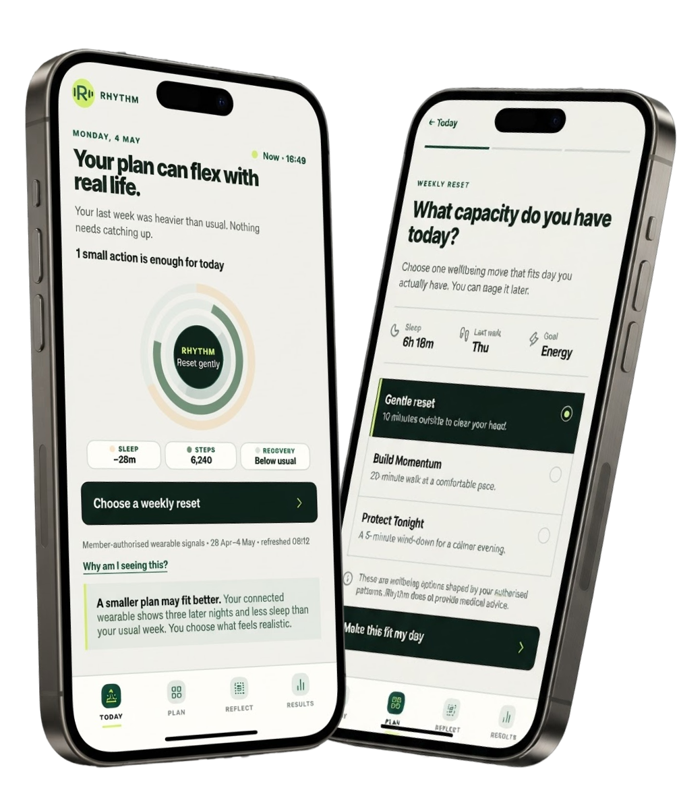
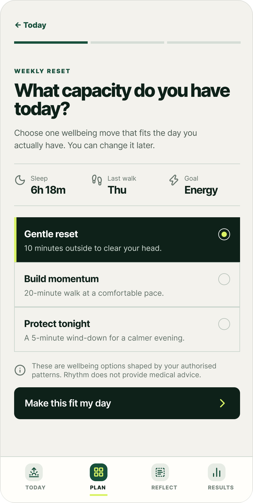
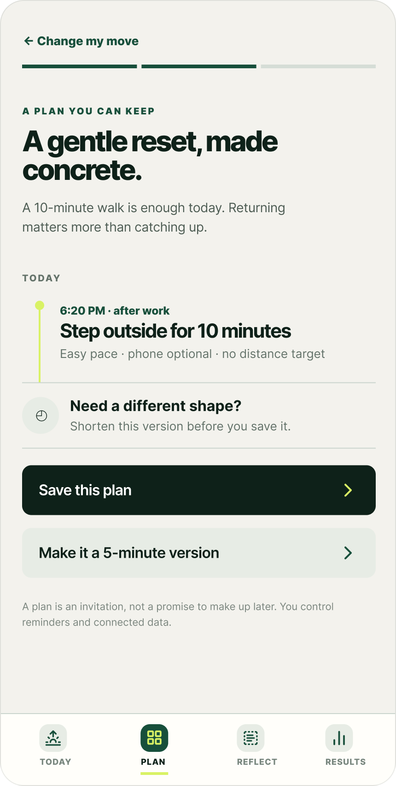
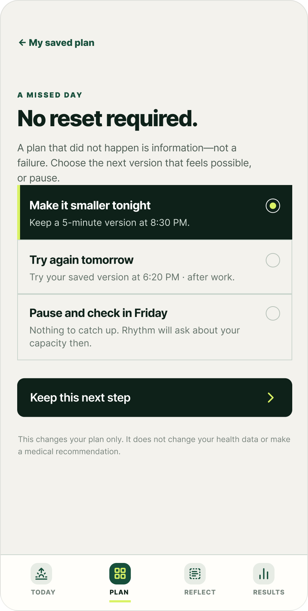
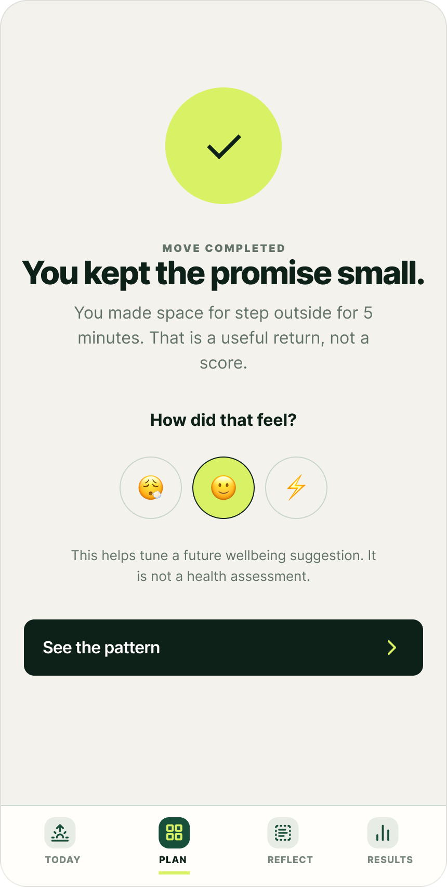

A missed goal must not become evidence of failure. Reduce the emotional cost of returning.
Back to Portfolio
Case study · Health & wellness · Product concept
Designing for Recovery
Rhythm App creates a manageable route back.
A flexible health-engagement concept designed to help health members return to their goals after everyday routines break down by refusing the mechanics that punish the return.

Problem
Members don't lose interest. They lose a manageable path forward.
Initial motivation is strong, but later programme weeks compete with work, fatigue and changing schedules. When a plan is missed, reopening the app starts to feel like pressure.
Why it matters
Conventional engagement mechanics make this worse.
- Escalating reminders
- Streak loss
- Make-up debt
- Guilt messaging
- Scores without context
- App-opens as KPI
each mechanic raises the emotional cost of returning
At a glance
The frame I worked inside.
Context only — never a diagnosis, score, causal claim, treatment advice or urgency signal.
Optional assistance that explains and simplifies.
Effort calibrated to capacity—small steps build momentum.
Design principles
System model
A single loop across four states, with clinical results intentionally kept outside the flow.
Today
Tune in to how
today feels.
Choose
Pick one step
that fits capacity.
Recover
Take a small,
realistic step forward.
Reflect
Learn what helps.
Carry it forward.
loops back to TodayResults — optional, episodicoutside the loop · never an engagement hook
Explore Rhythm appExperience the system — daily planning through recovery and reflection.Mobile prototype · Sample dataOpen interactive prototype
Decision matrix
Each decision, as a choice between the two playbooks.
Two critical decisions, chosen from the six moments most health engagement products get wrong—reframed.
The missed-day recovery branch is the central behavioural bet.
Optimise for recovery, not perfect adherence.
The old playbook
Treat a missed day as a failure state—a broken streak, a red mark, a debt to repay.
The recovery model
Create an explicit route back. A missed plan becomes information that helps determine the next realistic action.
WhyA single missed action should not increase the psychological cost of returning.
Let members calibrate effort before committing.
The old playbook
One fixed daily goal for everyone—unrealistic the moment capacity drops, so it is abandoned whole.
The recovery model
- Gentle reset · 10 min outside
- Build momentum · 20-min walk
- Protect tonight · 5-min wind-down
WhyReducing scope should still count as progress rather than abandonment—it preserves agency while setting realistic expectations.
Product screens
Four moments weighted by where the risk is.




Results—optional, episodic
The screening-results decision keeps these episodic results as a secondary supporting example—not an equal fifth step.
Safety & trust
Data earns its place in a fixed order.
Screening results are clearly labelled guidance, leaving room for the member's own interpretation and professional support when needed.
Safety checks
Explain why a signal is shown.
Member can disconnect any source.
Validation framework
Validation criteria—not achieved resultsHow we would validate the pilot.
Measured during weeks 4–8—the window where motivation historically fades.
Did the member finish the action they scoped themselves?
Notification opt-outs, wearable disconnections and reported pressure.
A diagnostic signal only—deliberately not the primary success metric.